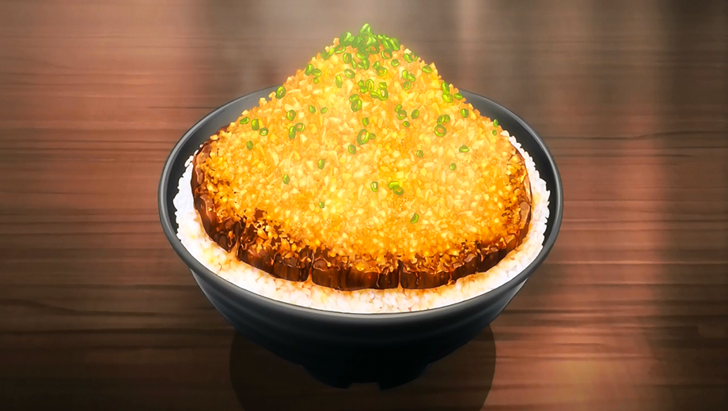

Chaliapin Steak Don

Description
The dish is exclusively made by Sōma combined with the Japanese original
dish, the Chaliapin Steak and the donburi concept for his first
Shokugeki. Although the dish was made with cheap ingredients that
can be found in a supermarket, the dish focused on both innovation and
balance of the ingredients to fulfill the donburi mantra, "Dons
are completed in one bowl."
Ingredients
- Beef Sirloin (Supermarket discount)
- Lots of Onion
- Garlic (mix with onion)
- Pepper
- Salt
- Potato Starch
- Rice (Donburi Bowl)
- Umeboshi Paste
- Pickled Plum
- Sauce
- Red Wine
- Soy Sauce
- Butter
Steps
- Chop the onions finely.
-
Remove the tendons from the beef and beat it with a meat tenderizer
until as flat as possible.
-
Cover meat on both sides with the chopped onion and leave for 30 minutes
or more. Remove the onion and add salt and pepper.
-
Cook the steak to your preference(most would prefer medium-rare). Remove
from heat and melt 1 tablespoon of butter in a frying pan and fry the
onion used for the beef until it changes color. Adjust the flavor with
salt and pepper, then move the onion to the steak.
-
Melt the remaining butter in the frying pan and fry the sides of the
meat before taking it out.
- Making the Sauce:
-
Add red wine to the frying pan used for the beef to deglaze it. Boil
down the wine while scraping off the meat juice.
-
Add soy sauce and mix with everything. Adjust seasonings to personal
preferences.
- Thicken with dissolved potato starch.
Back to recipes page